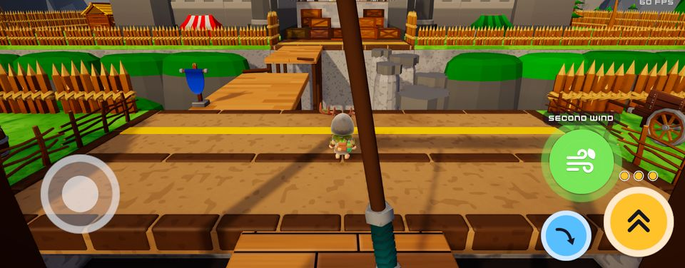
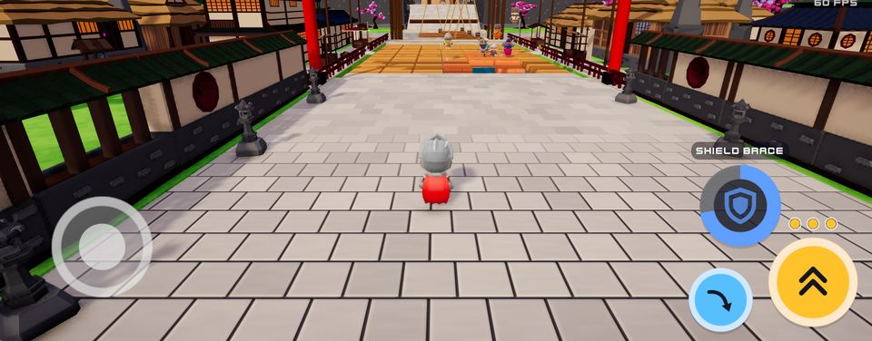
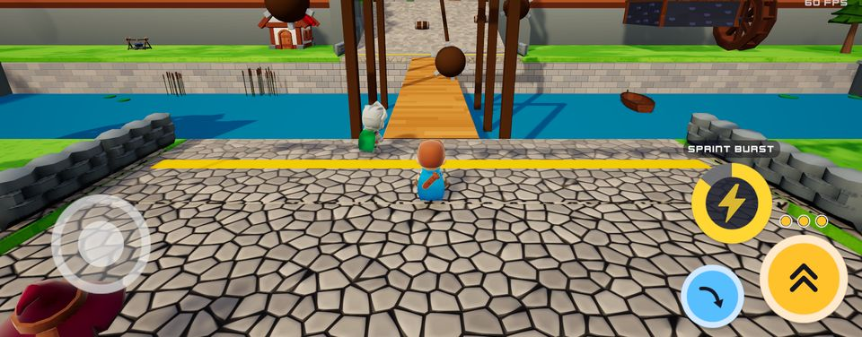
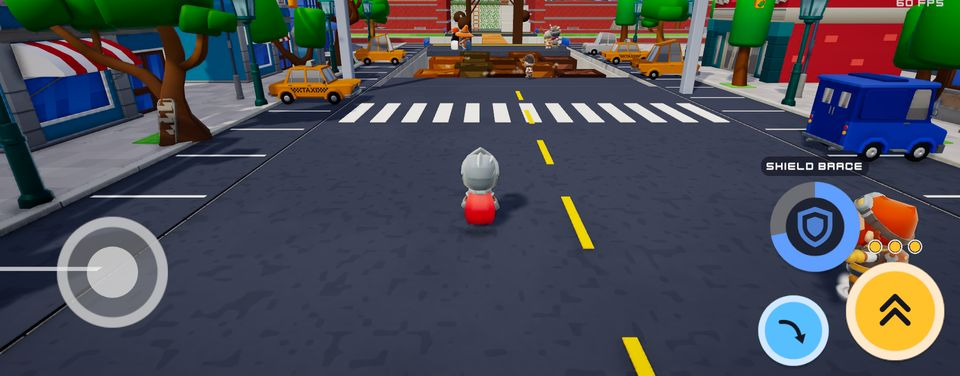

Install on your phone
- Download
Open this page on the phone and tap Download. If Chrome says the file might be harmful, choose Download anyway.
- Allow the install
Open the APK. The first time, Android asks to allow installs from Chrome: turn on "Allow from this source" and go back.
- Install
Tap Install. If Play Protect warns about an unknown app, choose Install anyway.
A new build installs over the old one, and your skins and settings stay. These are test builds signed with a development key; they are not on Google Play.
New in 0.1.22
- Trap pits have side walls again (Stepping Crates, Crate Pillars and the other pits). Since the new ground in 0.1.18 they had opened into the hollow under the ground.
- Medieval Village, Sakura Temple and Fjord Fortress.
Maps
Pick one with the MAP button on the racer screen.




All builds
20 builds, newest first.
-
0.1.22Latest
- Trap pits have side walls again (Stepping Crates, Crate Pillars and the other pits). Since the new ground in 0.1.18 they had opened into the hollow under the ground.
- Medieval Village, Sakura Temple and Fjord Fortress.
Download 0.1.22SHA-256
c4b6f6f13a0fb3abf1f99964a26ede4f4986bfefbf19d2c539f35790a1020410 -
0.1.21
- New default graphics setting, BALANCED: 85% resolution, no ambient occlusion, shadows to 60 m and a slightly shorter view distance. It draws about half as much as HIGH, so the phone runs cooler.
- The graphics button on the racer screen now switches BALANCED, HIGH and FAST. HIGH is the previous full quality.
- Floor spikes stay completely hidden until they fire (they used to peek out while the ring was warning).
Download 0.1.21SHA-256
470a9a24c48086ce4d71efb47c3f734b72b66692e629e16abbfa1cc04bf1afa0 -
0.1.20
- Lighter on the phone: still scenery is merged into a few large meshes, so each frame takes about a third as many draw calls. Fewer shadows are drawn, and shadows use two layers instead of three.
- Sakura Temple: the stone walls beside the ramps are closed at the ends, so you can no longer see through them.
- The ground no longer pokes up beside the ramps. The gorges have rock walls right up to the track.
- Smaller download than 0.1.18.
Download 0.1.20SHA-256
02c47d6b82ccdba256ea64bfbc071ad1bf0793ccabe3467a03d055cda5409e2c -
0.1.18
- Medieval Village, Sakura Temple and Fjord Fortress have new ground. Riverbanks are gentle grass slopes, and the gorges have rock walls made of big rock blocks.
- Nothing floats any more: fences, trees and rocks all sit on the ground.
- Rolling wooded hills around the valleys replace the block-shaped hills, and trees grow in groves.
- A clear blue sky on every map, without the yellow haze at the horizon.
Download 0.1.18SHA-256
8fdd55ab3c520e5eef9b6b328217d9a6cfd36403111962fff34d6578b8a545cd -
0.1.17
- The ability button turns grey with a countdown while it recharges and comes back in full colour when ready.
- No glow or ring around the buttons any more.
- The jump button turns grey when you are out of jumps.
Download 0.1.17SHA-256
521c23512074291d31ee6bf2b90ee45ae90f3a65610a9ff8f5a8841c4c5345db -
0.1.16
- New painted buttons: the jump, dive and ability buttons from the concept art.
- Each racer has their own framed ability button; it greys out after use and fills with colour clockwise as it recharges, with a countdown badge.
- Ability names in brush lettering; the racer cards and results use the new ability buttons.
Download 0.1.16SHA-256
e23ca930fd338db8718ed5d2acbf6b03284358e7e6b8590001ad114bc2768401 -
0.1.15
- Kerbs frame the track: rounded kerb stones (timber beams on Fjord Fortress) run along both edges and across every place where one surface meets another.
- Trap floors that end at a drop get a kerb lip.
Download 0.1.15SHA-256
8f84ecffdeada31b3217cbdb60470cab9ec9524c8ed3e1a93e31cfa021b14cd7 -
0.1.14
- Back to the painted ground of 0.1.12: the real pieces of 0.1.13 looked unnatural, especially where surfaces change.
- Falling tiles keep their colour after they come back.
Download 0.1.14SHA-256
6468e70d20c4b5df595fff6dadc604663c3fb58d895c4de1b84152ff516ca4ac -
0.1.13
- Real planks, cobblestones and paving slabs on the run surfaces (taken back out in 0.1.14).
- Falling tiles keep their colour after they come back.
Download 0.1.13SHA-256
f789f7051a340beeba16ab771500fac83117221ee969155a9f8f7022f88d351d -
0.1.12
- Cartoon surfaces: painted planks, stone, paving and ground.
Download 0.1.12SHA-256
a2d047decb1698cb3175a8d9a0c07a94ef31206613fbe464e75a051d1e934af4 -
0.1.11
- Graphics pass: smooth edges, soft shadows, ambient occlusion and glow.
- GRAPHICS HIGH / FAST switch.
Download 0.1.11SHA-256
a5a120b52dc59c0b6194d2b49b2d42391243b1db5110c4a58764386439202adf -
0.1.10
- 8 characters with 36 skins.
- 3 jumps that recharge one at a time.
- New ability buttons and visible ability effects.
Download 0.1.10SHA-256
6dc36aa4a78788e1ca817eaa524e5ccb190f74e25118dff48a2545a40ea1ba5b -
0.1.9
- Two more maps: Medieval Village and Modern Town.
Download 0.1.9SHA-256
19f533fd1ec724e24552cb20ac0519d65fb158a3653b6669e2bfe862765981f1 -
0.1.8
- Fixed Sakura Temple starting with no racers.
Download 0.1.8SHA-256
814f530aab40a5b4fb1b277574da6e3b63ebab60ff91e3d9d46479daf1786396 -
0.1.7
- Second map: Sakura Temple.
- MAP button on the select screen.
Download 0.1.7SHA-256
646ffeac307caf61f2b38df8f336a1ef98c0fd8e56152c7136cc78b8ed0f7c27 -
0.1.6
- The village is a real street with houses facing the track.
- Spikes rise from grates, with a warning ring.
Download 0.1.6SHA-256
0433eabdc32be54f14288132d6ef80b99edc05d4a275611b27e5baa0bdca6be6 -
0.1.5
- Fixed blocks with missing tops.
- Ladders climb faster than vines.
- The Large Barbarian now rolls the barrels and logs.
Download 0.1.5SHA-256
c09edce536693c7f7ae0f044e95712b629ca6ce14767eb9a5c608c32ca57739d -
0.1.4
- New course: Fjord Fortress.
- 16 interchangeable traps that change every race.
Download 0.1.4SHA-256
82ea16f60cd981244a9f8797205bd93526fb9972e3d38d856f7dbe7a3e930c17 -
0.1.3
- Snappier controls, a dive that slides under bars, and climbing.
- New course: Viking Fort Run.
Download 0.1.3SHA-256
6fc03ba88a189d78e6a7ba98048730a197ed488097ff3883cd2180c9a93ac52f -
0.1.2
- First phone build: the Medieval Trap Run course, 13 racers and 7 bots.
Download 0.1.2SHA-256
1a16f2b202dca7b792d4fb92cc6c30b2e146335e177cf8dc799f16895933f898